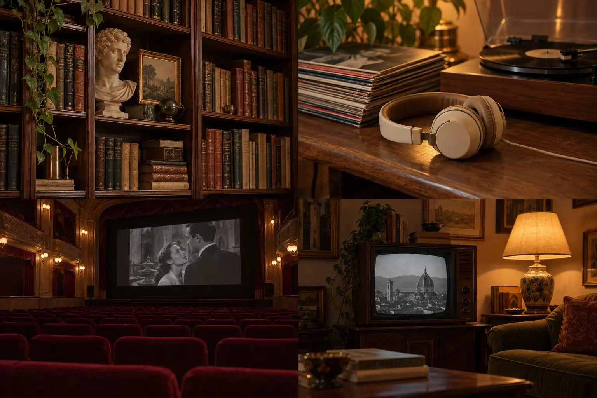

CULTURE
Things I’ve enjoyed, discoveredor found worth sharing.

BOOKS
Passages I enjoyed. And wanted to keep here.
Robert Harris · The Cicero Trilogy
MUSIC
Most played songs and latest discoveries.
MOVIES
Films, directors, actors and soundtracks I love.
TV SERIES
Stories and characters that stayed with me.